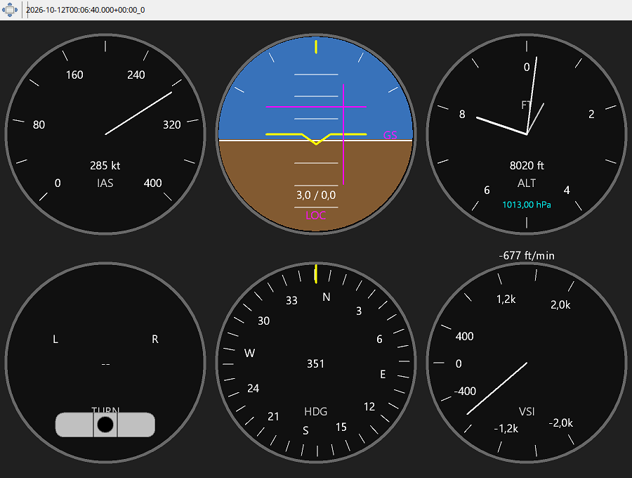

The set contains indicated airspeed, attitude, altimeter, turn/slip, heading and vertical speed instruments. Read them together: a climb should agree with the V/S sign and a bank with the direction of heading change. Attitude uses recorded pitch and bank; it does not rotate the map. The barometric setting beside the altimeter belongs to the selected replay time.
The VSI range is fixed for the recording/profile, avoiding needle jumps caused by rescaling. The classical altimeter geometry remains in feet when textual units change. LOC and GS deviations appear when valid ILS data was recorded. Detach and enlarge the panel, then scrub the recording to compare instruments at a readable size.
